System Diagram
ENGINE CONTROLS SCHEMATICS
Module Power, Ground, Serial Data, and MIL
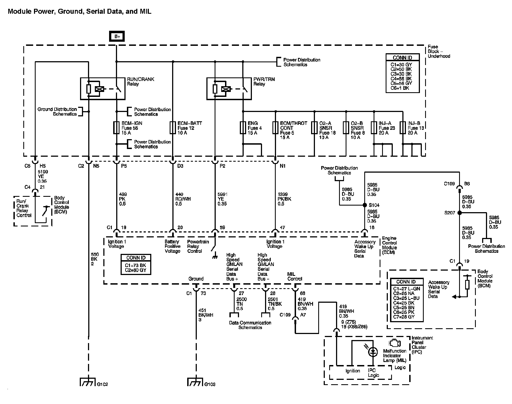
Engine Data Sensors - 5-Volt and Low Reference
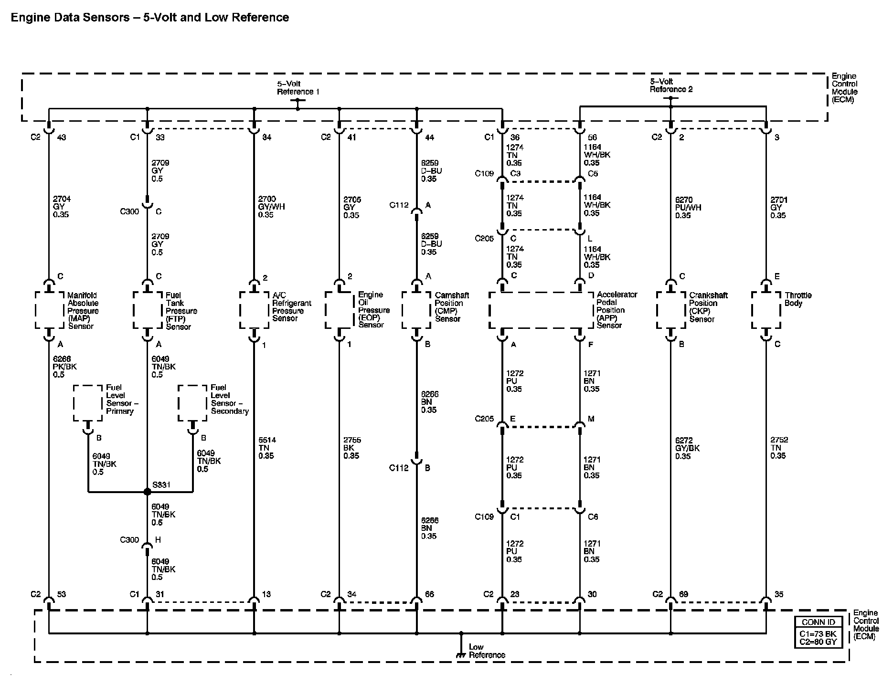
Engine Data Sensors - Pressure and Temperature
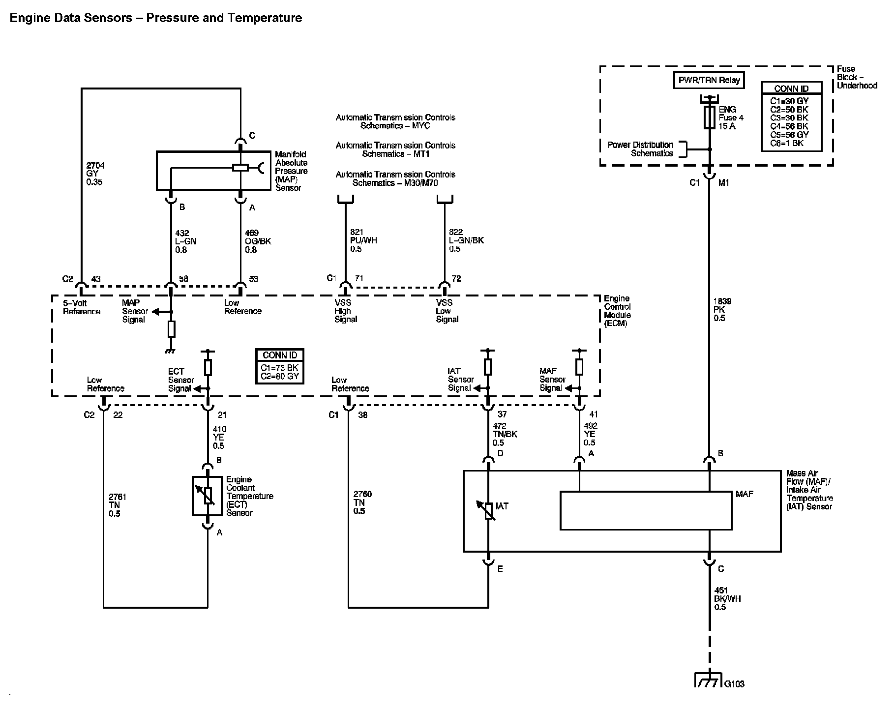
Engine Data Sensors - Oxygen Sensors
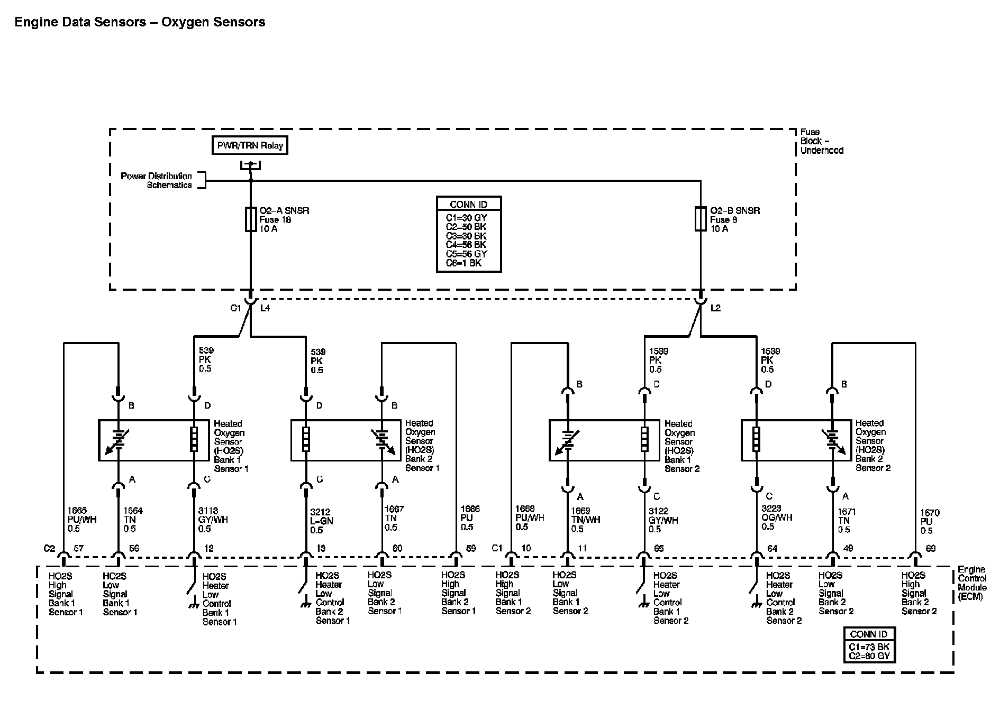
Engine Data Sensors - Throttle Controls
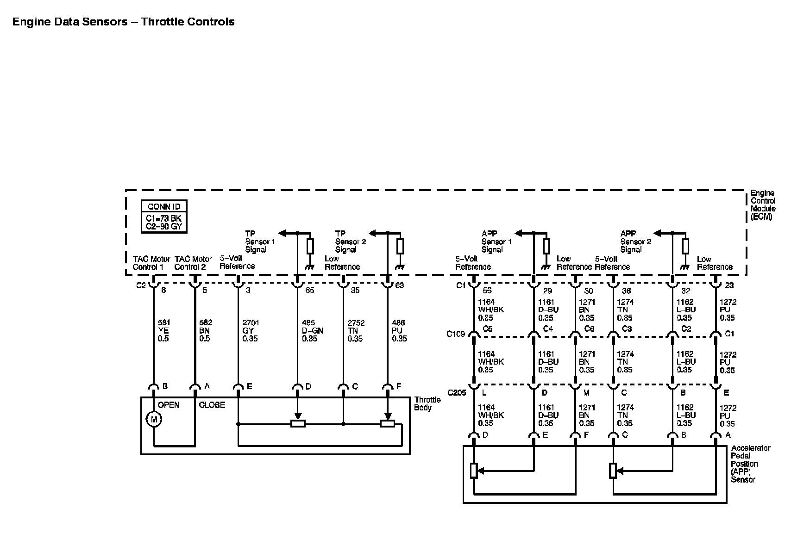
Ignition Controls - Ignition System Coils 1, 3, 5, and 7
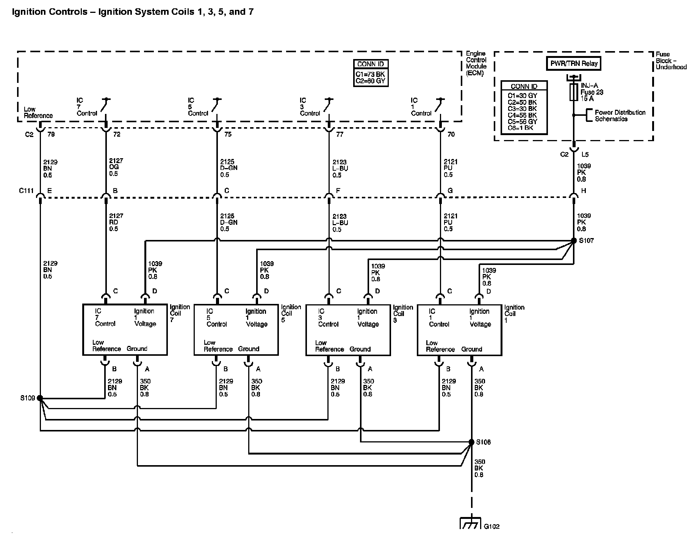
Ignition Controls - Ignition System Coils 2, 4, 6, and 8
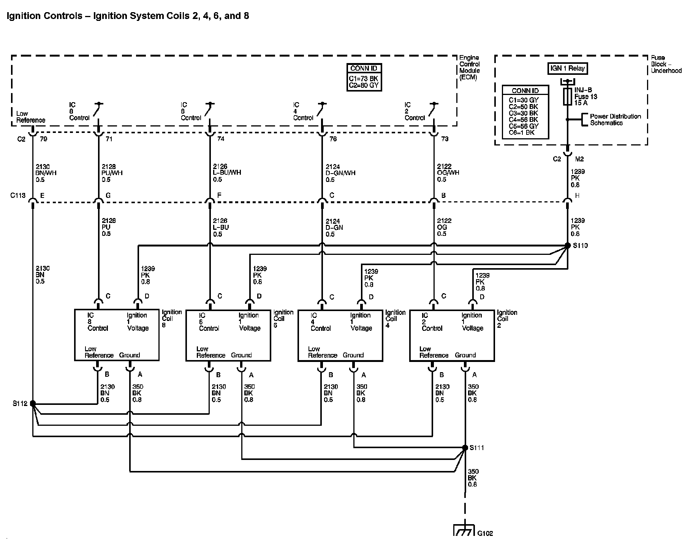
Ignition Controls - Sensors and Active Fuel Management (AFM) Controls
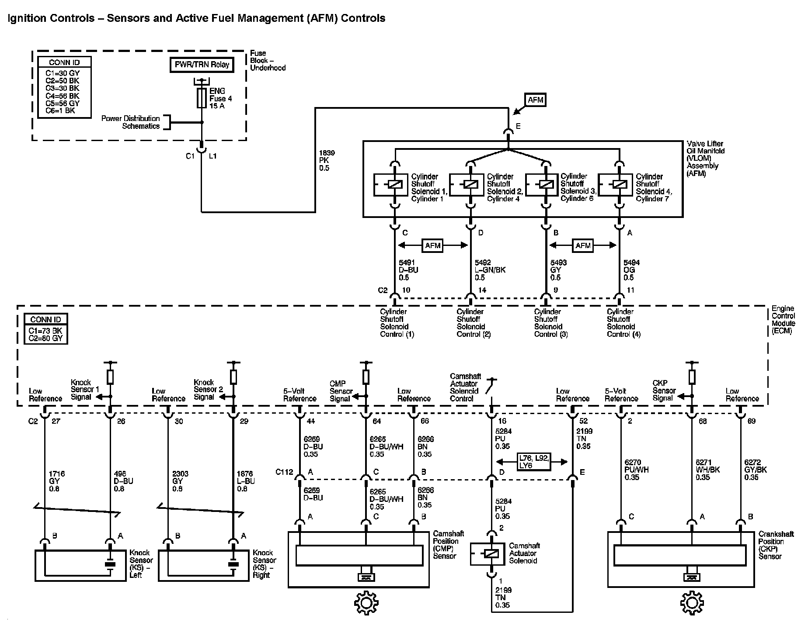
Fuel Controls - Fuel Pump Controls
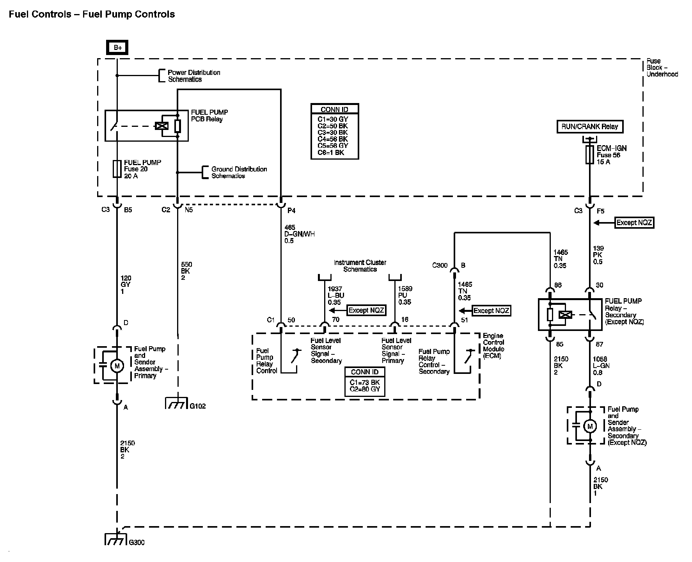
Fuel Controls - Fuel Injectors
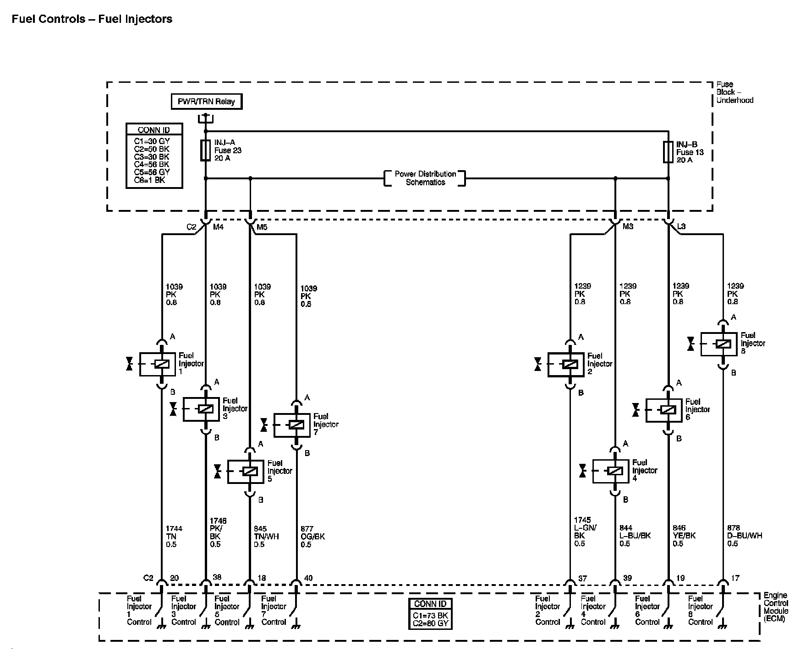
Fuel Controls - EVAP Controls
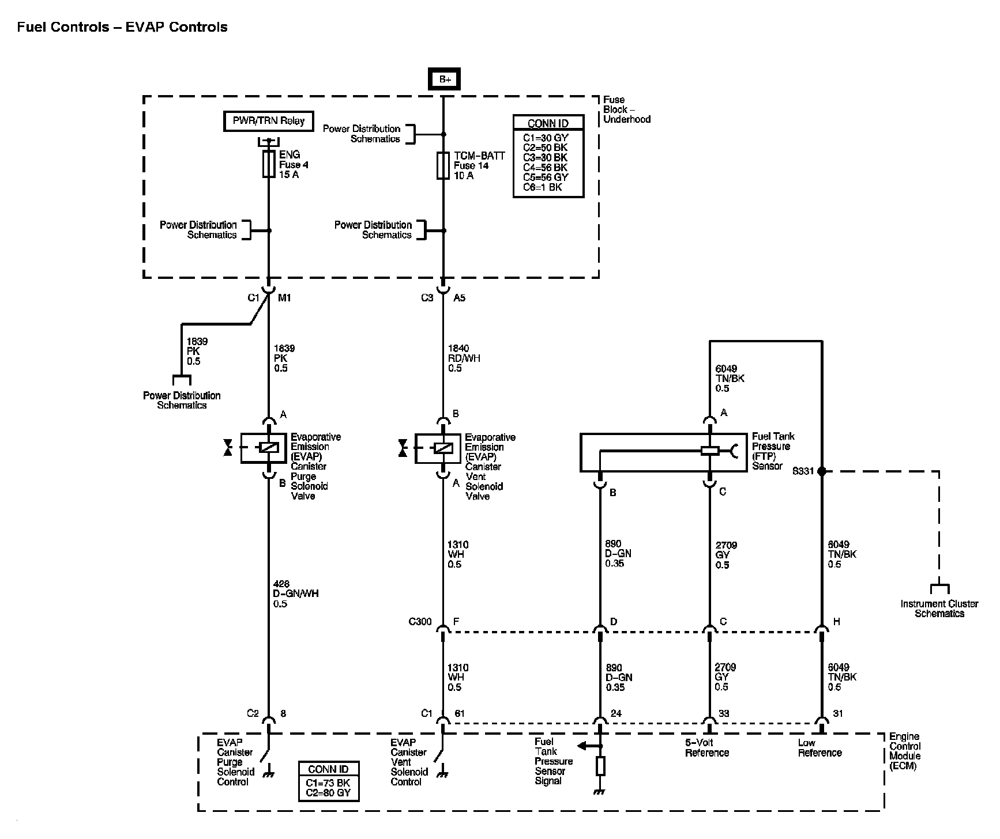
Controlled/Monitored Subsystem References
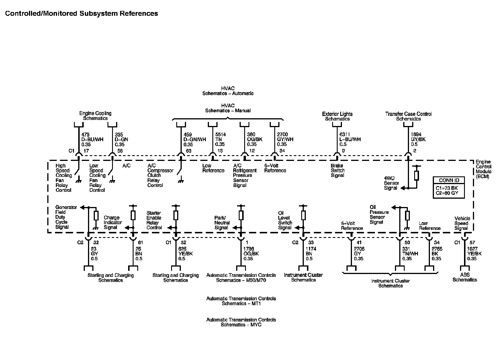
Locations: The locations for the Connectors, Grounds, Splices, and Grommets shown within these diagrams can be found via their numbers at Vehicle Locations. Locations